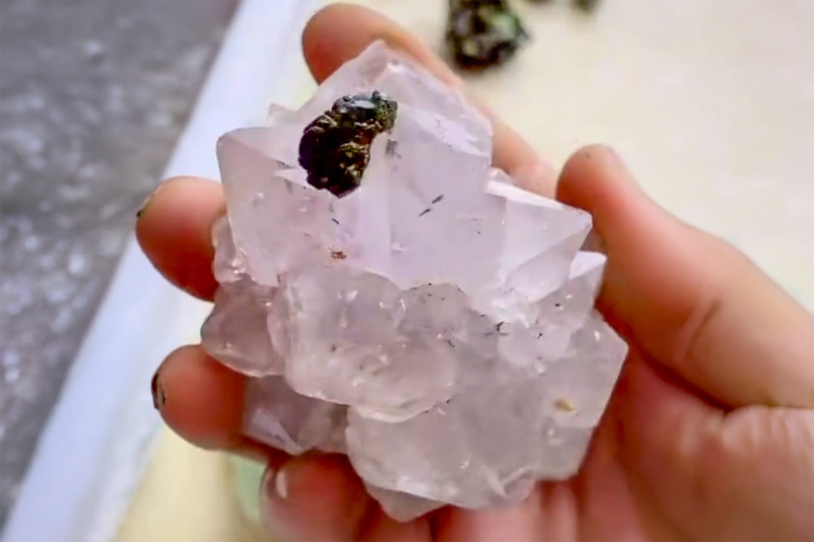

Quartz with Epidote Flower
"Quartz with Epidote and Inclusions"
VIII-09671
Unassigned
Purchased 3/1/2026 from 7 Minerals Mine for $20.00
Core Collection • In Collection
Details
Storage Type: Drawer
Storage Location: C4D5 Quartz Small Cabinet
Size class: Cabinet (0)
Dimensions: Unrecorded
Estimated Mass: 194 g
Luster: Average, Vitreous